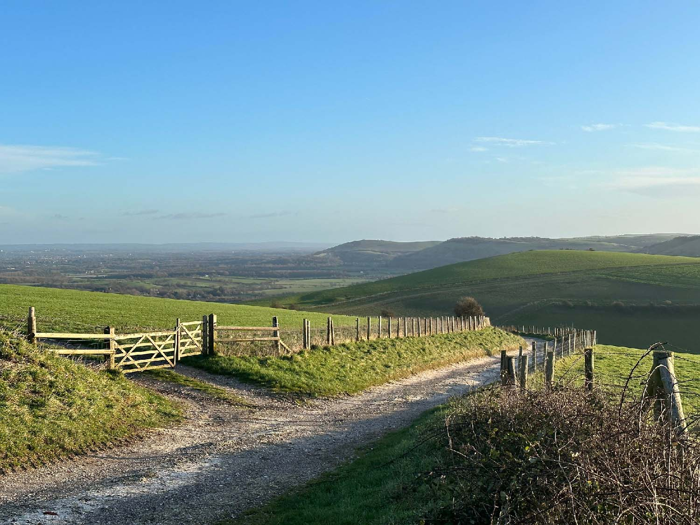

Welcome to Very Civil Survey, a freelance Site Engineering Service based in Brighton, East Sussex. Site Engineering in this context is essentially the process of bringing into reality on the ground the designs of Engineers and Architects using Surveying Techniques.
It's about putting it all in the correct position in space, and as specified. The process requires good technical knowledge both of Surveying and of Engineering construction, good communication skills to interpret and clarify the designer's intent and importantly the confidence, right manner and ability to communicate each element of the design to the workforce on the ground - whether it be supervisors, machine drivers, groundworkers, carpenters, steel-fixers etc.
It's then about communicating that information in the most efficient and easily understood format possible, whether it be via physical ground markers, design drawings, sketches, digital means, as well as good old-fashioned talking!
Set up in the Spring of 2021 by an experienced Site Engineer, Very Civil Survey brings a wealth of knowledge, practical experience and common sense to ensure projects ‘get off the ground’ smoothly.
Backed by 20 years of previous experience working for both Main Contractors and Groundwork sub-Contractors, across a range of projects that encompassed elements of surveying in addition to the traditional Site Engineers role.
Complemented by this comes a firm understanding of the ‘nuts and bolts’ of construction design as well as the Survey element, which helps when appraising the workability of a design element prior to committing it to the setting out process.
A robust check that the design actually works, prior to breaking ground, is a step which can’t be underestimated if wasting time and money is to be avoided. To coin a sensible adage, “Measure Twice, Cut Once”!
Very Civil Survey use Robotic (one person) Surveying Equipment to enable survey work to be undertaken independently and with more speed and efficiency than a traditional 2-person arrangement.
For the computer element, a combination of AutoCAD based software and N4ce Survey software is used. Survey Software lends itself to efficiently processing surveyed information before exporting to design software for final drafting as well as using it to better extract design information from drawings into useable data for setting out in the field. In simple terms what was once done with nothing more than a calculator can now be done much more efficiently, accurately, and intelligently.
Very Civil Survey currently supplies a service to different clients, whose needs extend to a few days a week to one-off visits. Longer term, fixed length contracts are considered if circumstances permit.
If you think we can be of help to your project, please feel free to send a message with your requirements. Site work and driving require focus so please send an email to donald@verycivilsurvey.co.uk and we will get back to you.